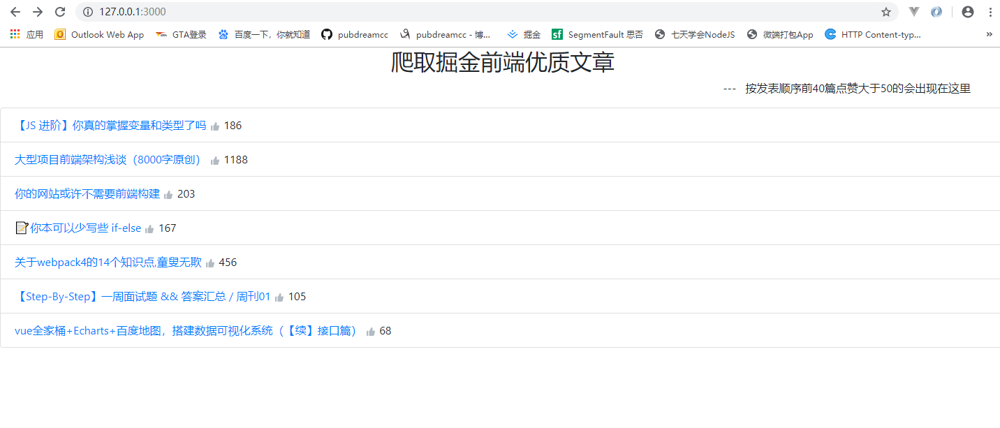
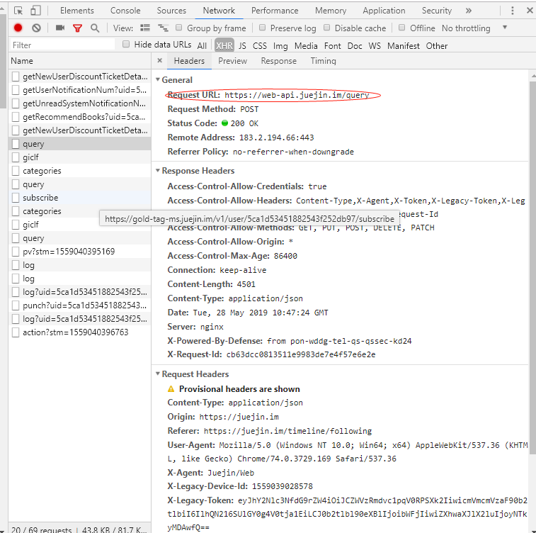
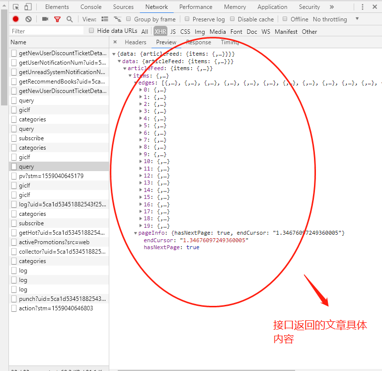
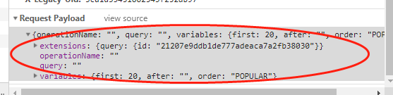

hello，小伙伴们，我是你们的pubdreamcc，本篇博文出至于我的GitHub仓库node学习教程资料，欢迎小伙伴们点赞和star，你们的点赞是我持续更新的动力。
GitHub仓库地址：node学习教程
好了，废话不多说，今天我们来玩一个有意思的 demo ：
Node实现爬虫抓取掘金点赞大于
50的优质前端文章
先来看以下效果：

服务器会每10分钟更新相关内容，好了，开始今天的练习了~
express
superagent（服务端发送请求模块）
art-template
掘金官方API
找接口
先来看看掘金首页获取前端文章的后端接口 API 在哪里。
打开掘金官网，(F12) 打开开发者模式查看network 选项，咱们可以看到获取文章接口的api如下：


打开开发者模式，我们很轻松的找到掘金获取文章的接口，这就好办了，说实话前端开发，只要有了接口，那就等于有了一切，我们可以尽情的 coding 了~
创建服务器文件 app.js ，通过superagent 模块发送请求获取文章数据。
app.js 是我们服务端代码，这里通过服务端发送请求获取爬虫所要的数据保存下来。
// 定义一个函数，用来获取掘金首页前端文章信息
function getInfo () {
// 利用superagent 模块发送请求，注意请求头的设置和POST请求体数据（请求参数）
superagent.post('https://web-api.juejin.im/query').send(params).set('X-Agent', 'Juejin/Web').end((err, res) => {
if (err) {
return console.log(err)
}
// 保存所有文章信息
const array1 = JSON.parse(res.text).data.articleFeed.items.edges
const num = JSON.parse(res.text).data.articleFeed.items.pageInfo.endCursor
// 筛选出点赞数大于 50 的文章
result = array1.filter(item => {
return item.node.likeCount > 50
})
params.variables.after = num.toString()
superagent.post('https://web-api.juejin.im/query').send(params).set('X-Agent', 'Juejin/Web').end((err, res) => {
if (err) {
return console.log(err)
}
const array2 = JSON.parse(res.text).data.articleFeed.items.edges
const result2 = array2.filter(item => {
return item.node.likeCount > 50
})
result2.forEach(item => {
result.push(item)
})
})
})
}
// 调用一次获取数据
getInfo()
// 设置定时器，规定10分钟更新一此数据
setInterval(() => {
getInfo()
}, 10*1000*60)这里要注意掘金接口那边需要设置请求头的 X-Agent 属性，一定要在 superagent 发送 post 请求时候带上，否则会出错，另外就是固定的请求参数 params，这个可以仿照掘金官网来写。

模板引擎渲染数据，发送结果到浏览器渲染
这一步需要借助模板引擎渲染 HTML 页面，把从第二步拿到的结果渲染到页面中，最终返回给浏览器渲染。
app.js 代码：
// 监听路由
app.get('/', (req, res, next) => {
res.render('index.html', {
result
})
})
// 绑定端口，启动服务
app.listen(3000, () => {
console.log('running...')
})模板 index.html 代码 ：
<!-- 借助bootstrap样式，注意模板语法的使用 -->
<ul class="list-group">
{{each result}}
<li class="list-group-item">
<a href="{{$value.node.originalUrl}}" target="_blank">{{$value.node.title}}</a>
<img data-v-7bf5f1fe="" src="https://b-gold-cdn.xitu.io/v3/static/img/zan.e9d7698.svg">
<span>{{$value.node.likeCount}}</span>
</li>
{{/each}}
</ul>如果你需要项目的源码可以在GitHub对应仓库的 node学习demo案例 文件夹下查找。